Designing a social good agency
Donors couldn’t trust that grantees could grow without becoming dependent. They wanted to see their grantees flourish in their community and scale their efforts while broadening their philanthropic networks.
Well meaning donors assumed that providing resources for local admin hires or external coaches would improve operations and communications
This was years of underutilized funding and missed opportunities. Local NGOs grants plateaued, donors held back, and long-term community impact was stalling.
Ours actions
- Conducted deep field research and organizational design
- Co-founded and structured agency for NGO capacity building and communication
- Created customized tools, storytelling, and strategy plans
- Delivered workshops, planning tools, and portfolio advising for donors
Results, in 3 years…
- From 0 to over 20 NGOs and initiatives supported
- Hundreds of thousands of grant dollars secured
- Build a $3m revenue agency from scratch
- Still operating helping an ever broadening group of organizations
Our agency model helps our clients serve multiple audiences
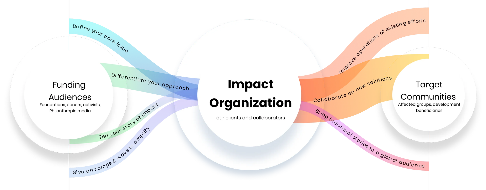
Collaboration with each community
Grassroots NGOs across Southeast Asia had strong missions and deep community trust—but struggled to attract sustainable funding or scale their efforts. Donors, in turn, were frustrated. They wanted to expand their grantee networks without creating dependency, but lacked a clear way to build long-term capacity within the organizations they supported.
I co-founded ArticleGroup.org to serve both sides of this problem. We worked closely with community-based organizations to improve operational systems, clarify strategic goals, and articulate their impact to funders and International audiences. Through field research, participatory design, and customized capacity building, we helped over 20 NGOs and initiatives position themselves for growth and stability. This led to hundreds of thousand in new philanthropic dollars secured by grantees.
Meanwhile, we became trusted partners to the donor community—helping funders plan more strategic interventions and scale their networks with greater confidence. In just three years, we grew ArticleGroup.org from an idea to a $3M agency built on results, trust, and a commitment to human-centered design for social good.
Field research & observation
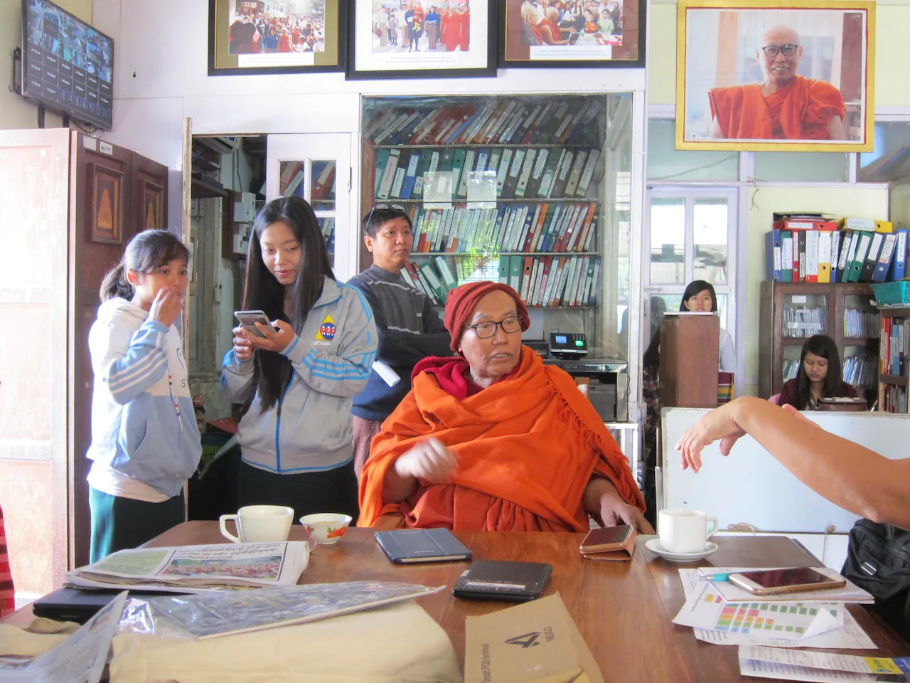
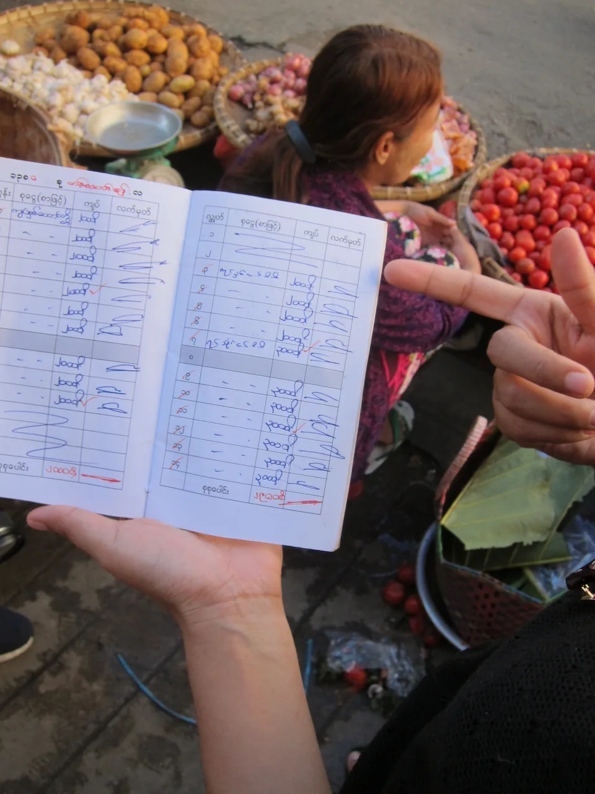
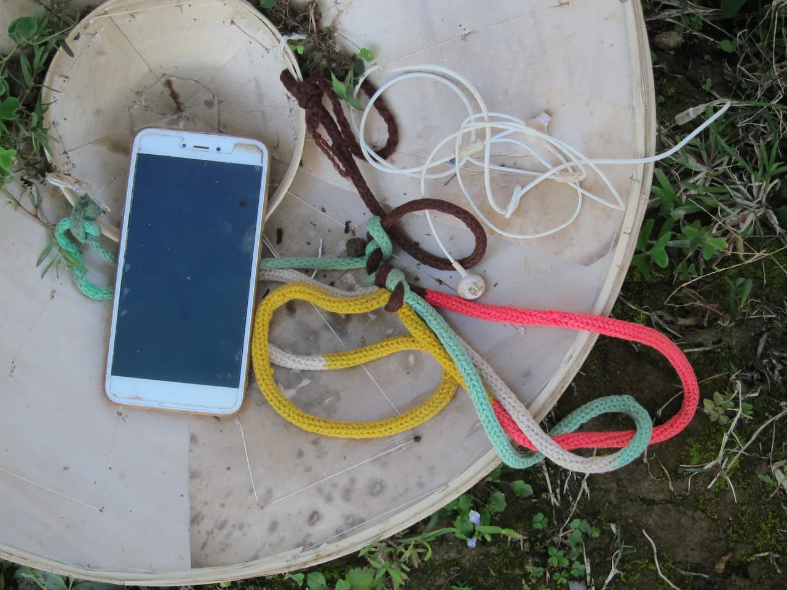
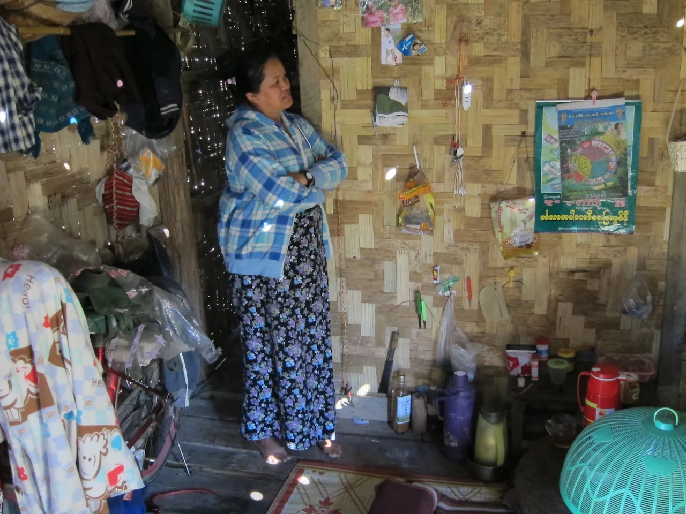
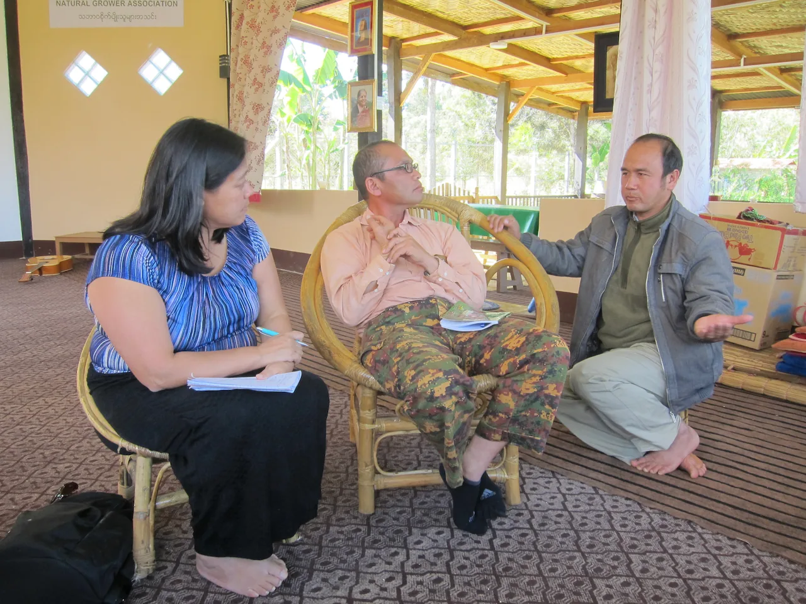
Innovation & empathy
As our work continued to grow across Southeast Asia and North America, we adapted our methods to meet the unique needs of each organization and the specific context of the communities they aimed to help. This tailored approach ensured our interventions were practical, supportive, and transformative, driving sustainable impact through strategic design and effective communication.
As Articlegroup.org continues to refine its approach, the essence of our work remains the same—bringing human-centered design to the forefront of humanitarian efforts. Our projects in Thailand and Myanmar illustrated how this approach did not just support operational improvements but also transformed how these organizations connected with their diverse audiences. We were committed to evolving our strategies and interventions, ensuring they remained relevant and impactful in a rapidly changing world. Through innovation and empathy, we strove to make a lasting difference in the lives of those who needed it most.
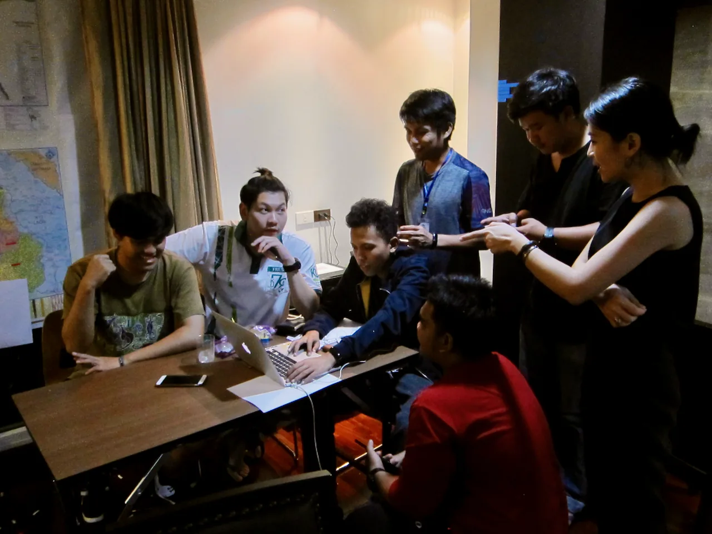
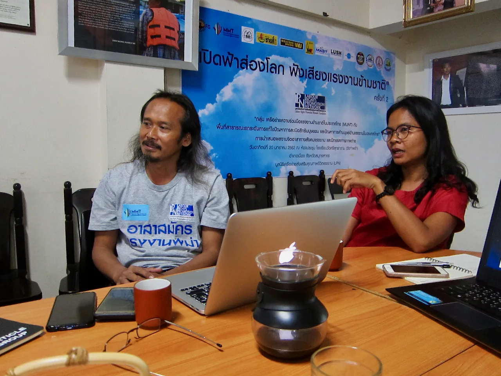
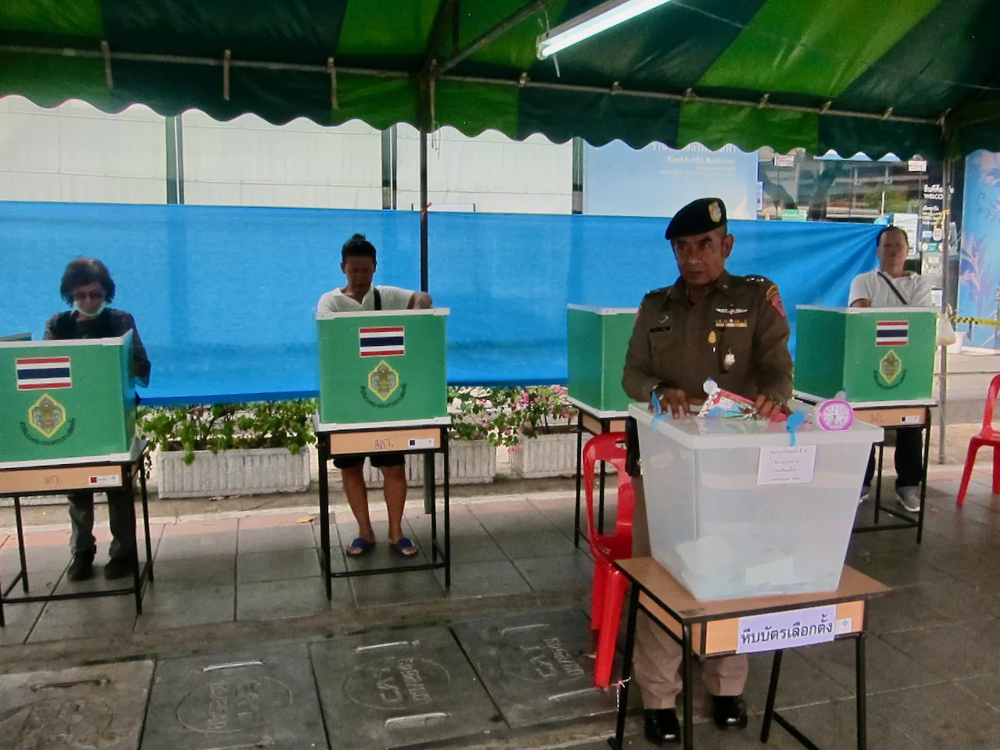
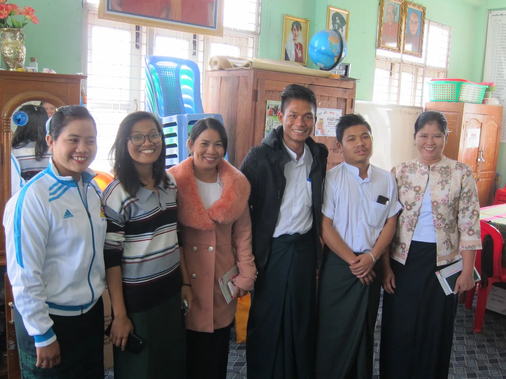
Past initiatives
Enabling clandestine network of reporters and whistleblowers inside a repressive regime
- Operational consulting
- Branding & messaging
- Technological consulting
Justice for Myanmar
Explore Resource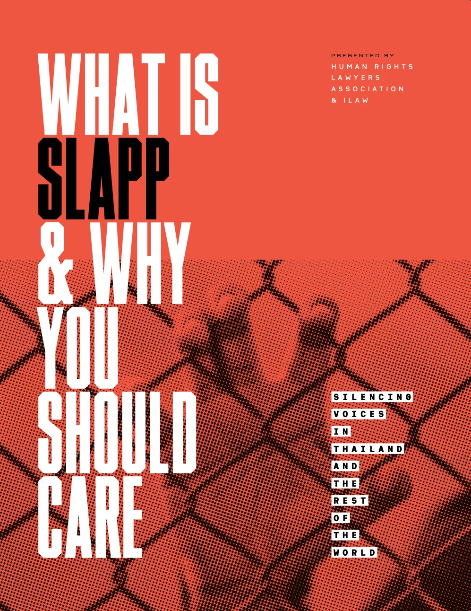
Human Rights Lawyers Association & ILAW
Fighting legal hypocrisy inside Thailand’s slanted legal system
- Publication design
- Campaign design
- Operational consulting
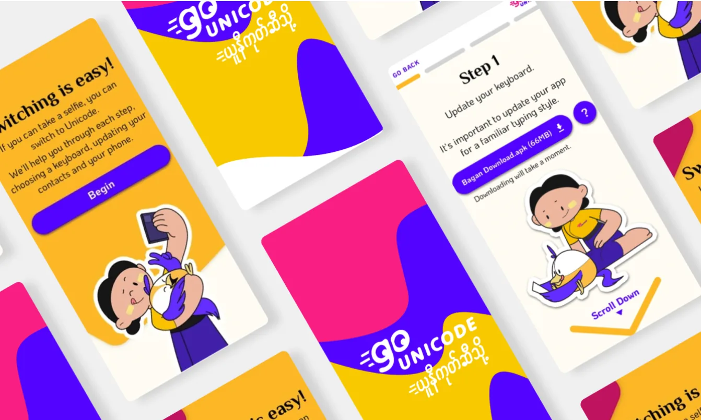
GoUnicode
Helping everyday users in Myanmar switch to Unicode for secure, inclusive communication.
reached
Increased digital literacy & access
Explore GoUnicodeWant to see all the great work & innovative resource?
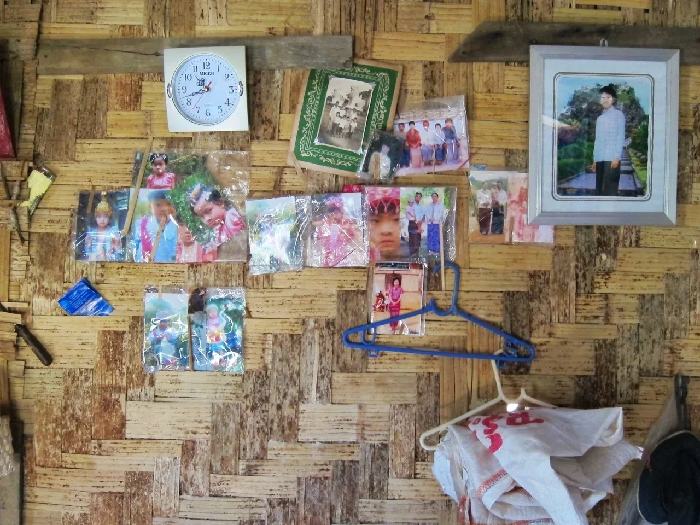